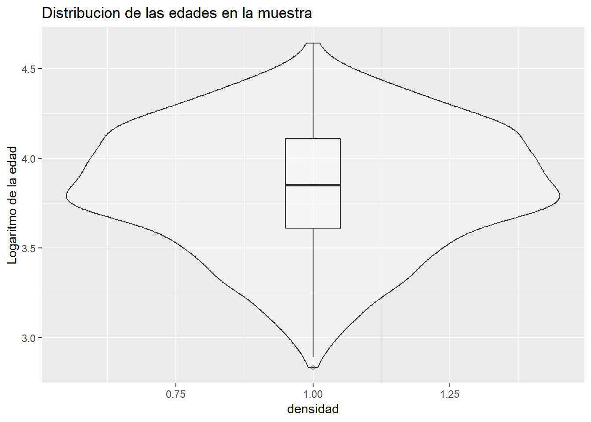
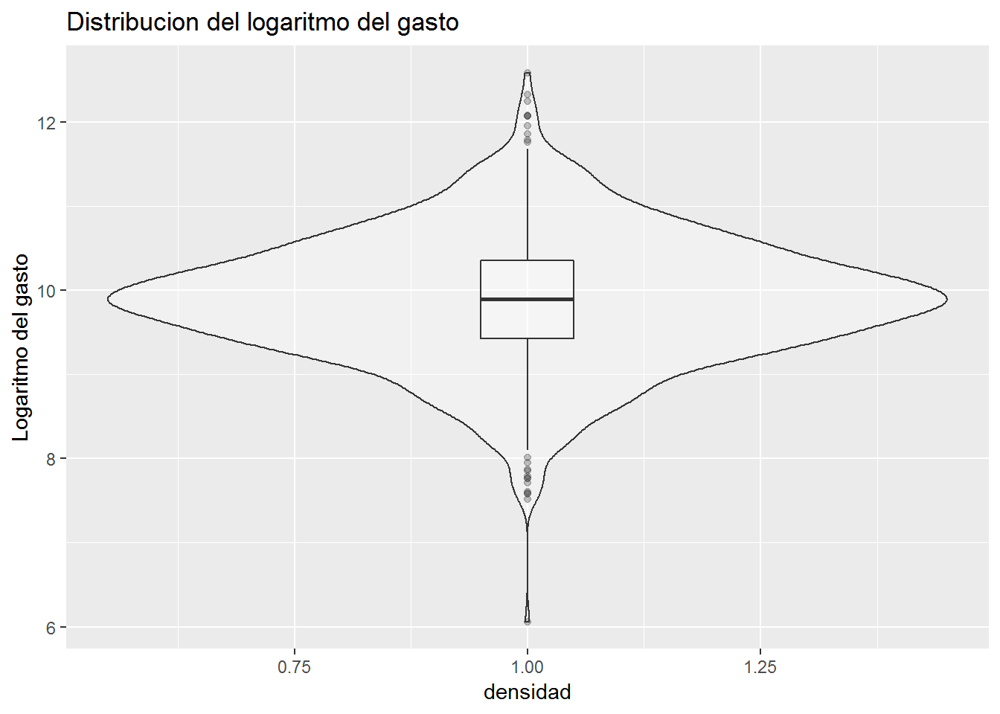
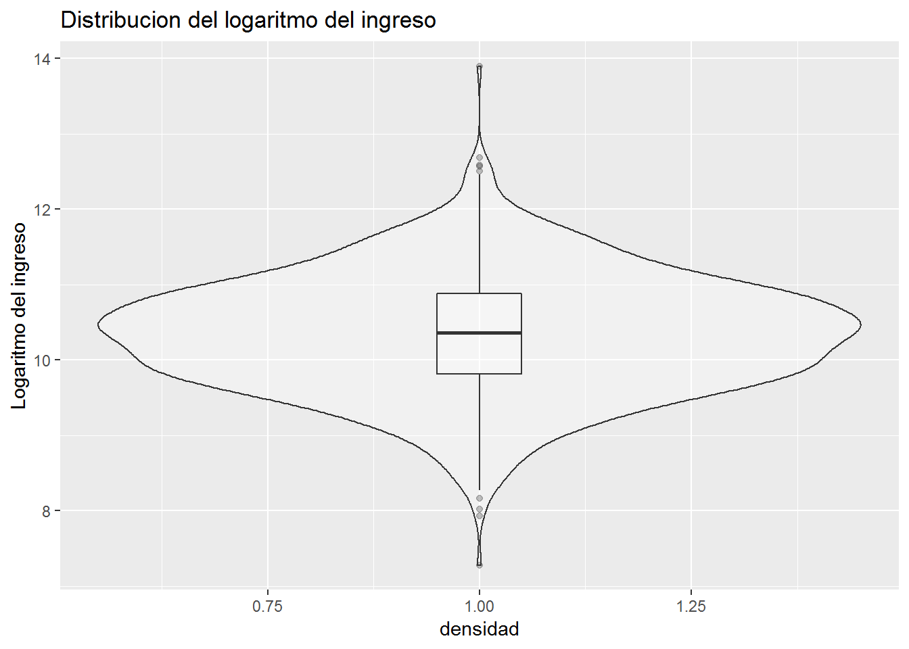
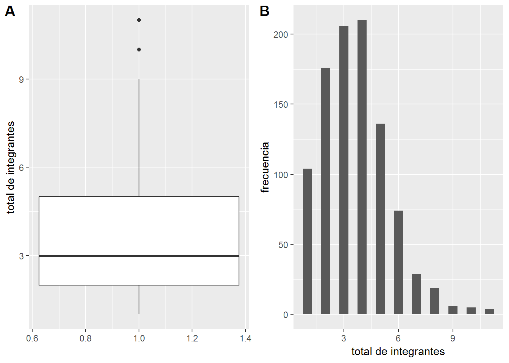
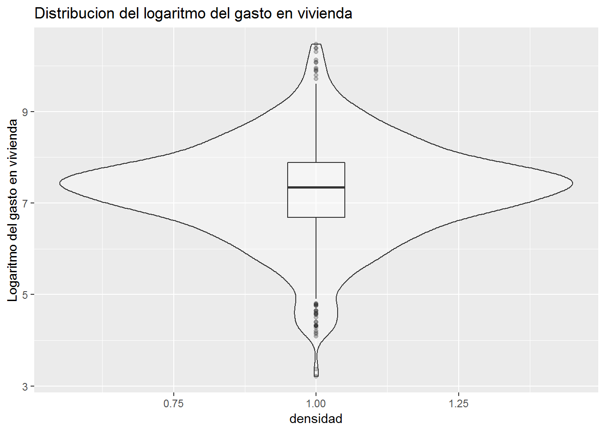
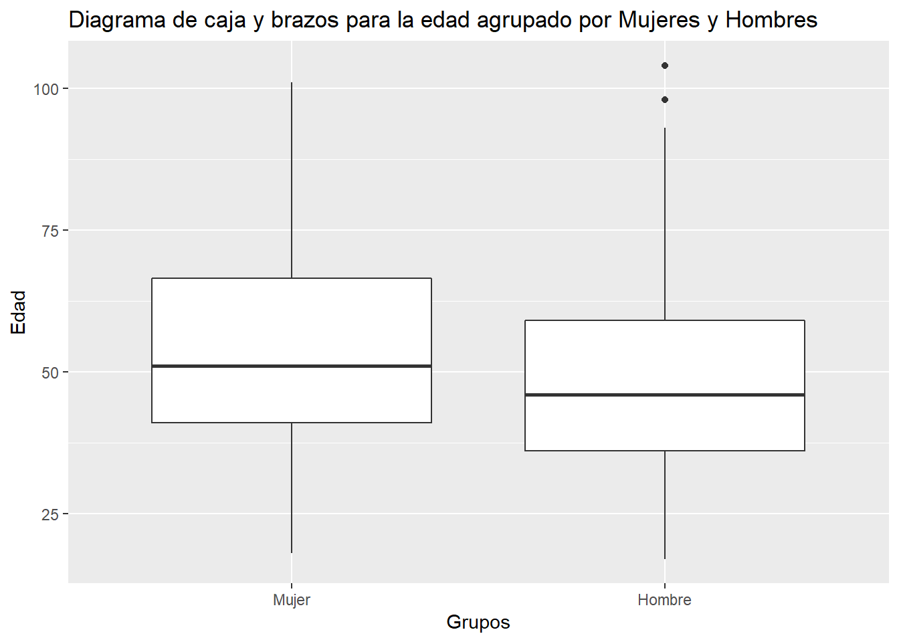
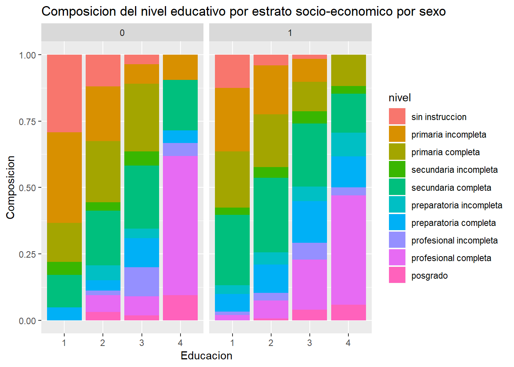
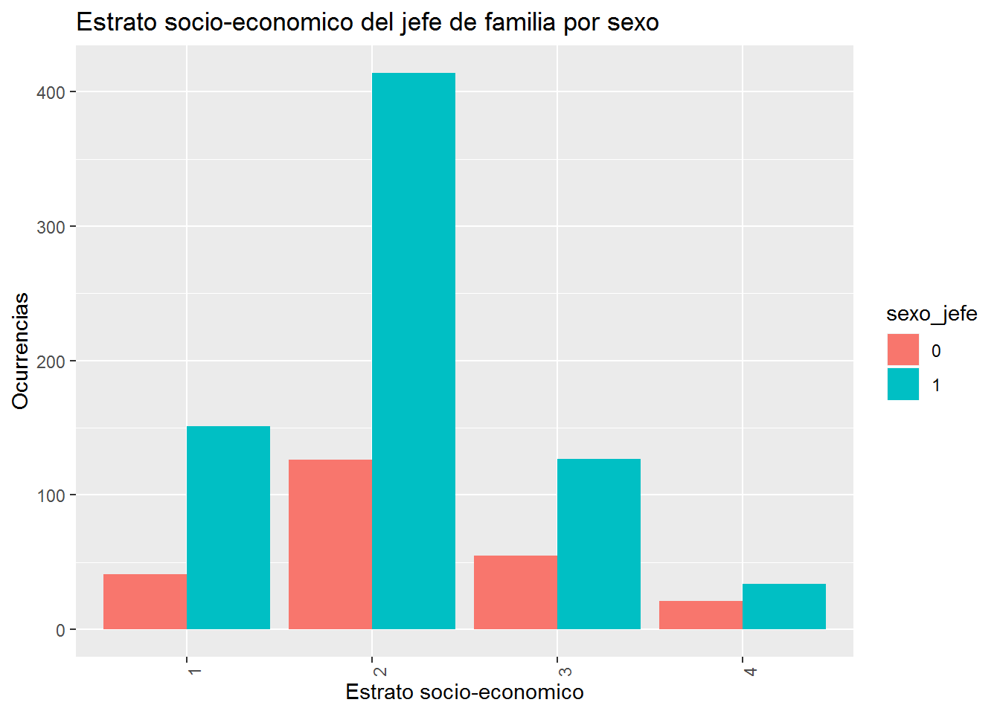
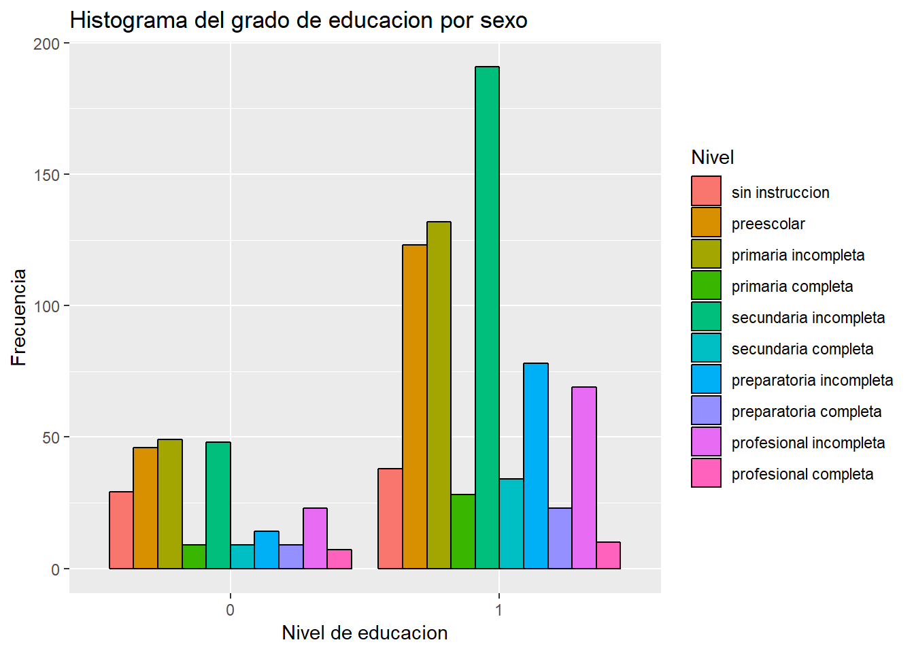

2 An?lisis exploratorio de los datos y estad?stica descrpitiva
El an?lisis exploratorio de los datos consiste en descubrir las relaciones entre las variables propuestas para el modelo, para que as? se puedan presentar de forma correcta. Tambi?n es ?til para conocer la estructura de los datos y conocer su consistencia. La forma en la que presento esta secci?n es primero, con estad?sticas descrptivas de las variables numericas, entre las cuales se incluyen media, moda, desviacion estandard, cuartiles, m?nimo y m?ximo. A continuaci?n prosigo con graficas de estad?stica univariada, entre los que se incluyen, diagramas de caja y brazos, histogramas y gr?ficos de densidad esto con el prop?sito de conocer la forma, el sesgo y los par?metros de localizacion de la distribuci?n de estas variables. Despu?s exploro algunas relaciones multivariadas entre distintos par?metros categ?ricos y numericos, esto con el fin de conocer las car?cteristicas de la poblaci?n.
| datos2 (N = 969) | |
|---|---|
| Edad del jefe de familia | |
| min | 17 |
| median (IQR) | 47 (37.00, 61.00) |
| mean (sd) | 49.28 ± 16.41 |
| max | 104 |
| Total de integrantes del hogar | |
| min | 1 |
| median (IQR) | 3 (2.00, 5.00) |
| mean (sd) | 3.65 ± 1.83 |
| max | 11 |
| Gasto general(log) | |
| min | 6.061783 |
| median (IQR) | 9.89 (9.42, 10.36) |
| mean (sd) | 9.89 ± 0.79 |
| max | 12.5858 |
| Ingreso(log) | |
| min | 7.280429 |
| median (IQR) | 10.36 (9.82, 10.88) |
| mean (sd) | 10.35 ± 0.80 |
| max | 13.8962 |
| Gasto en vivienda(log) | |
| min | 3.218876 |
| median (IQR) | 7.34 (6.69, 7.88) |
| mean (sd) | 7.27 ± 1.08 |
| max | 10.47658 |






2.0.1 Relaciones multivariadas


